OIL PUMP > DISASSEMBLY |
| 1. FIX OIL PUMP ASSEMBLY |
| 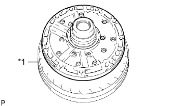 |
Place the oil pump body on the torque converter clutch.
| *1 | Torque Converter Clutch |
| 2. REMOVE CLUTCH DRUM OIL SEAL RING |
| 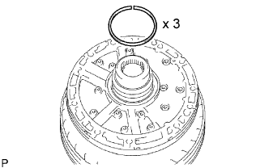 |
Remove the 3 oil seal rings.
| 3. REMOVE STATOR SHAFT ASSEMBLY |
| 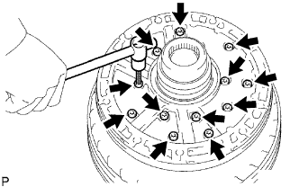 |
Remove the 14 bolts, and then remove the stator shaft from the oil pump body.
| 4. REMOVE FRONT OIL PUMP BODY O-RING |
| 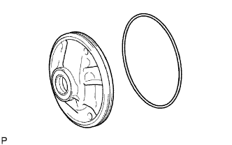 |
Remove the O-ring from the oil pump body.
Remove the oil pump body from the torque converter clutch.
| 5. INSPECT FRONT OIL PUMP BODY SUB-ASSEMBLY |
| 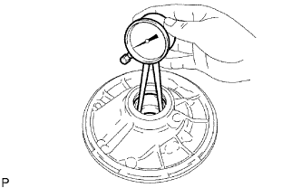 |
Using a dial indicator, measure the inside diameter of the oil pump body bush.
| 6. INSPECT STATOR SHAFT ASSEMBLY |
| 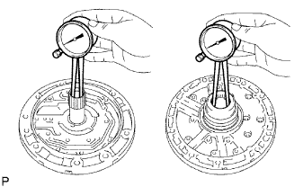 |
Using a dial indicator, measure the inside diameter of the stator shaft bush.
| 7. INSPECT CLEARANCE OF OIL PUMP ASSEMBLY |
| 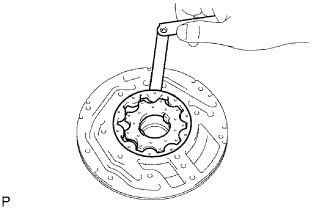 |
Push the driven gear to one side of the body.
Using a feeler gauge, measure the body clearance.
| 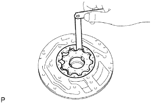 |
Using a feeler gauge, measure the tip clearance between the driven gear teeth and drive gear teeth.
| 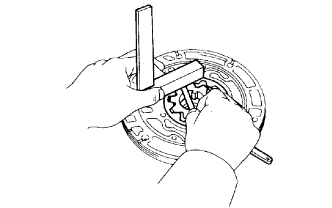 |
Using a steel straightedge and feeler gauge, measure the side clearance of both gears.
| Mark | Thickness |
| 0 | 10.74 to 10.749 mm (0.42283 to 0.42319 in.) |
| 1 | 10.75 to 10.759 mm (0.42323 to 0.42358 in.) |
| 2 | 10.76 to 10.77 mm (0.42362 to 0.42401 in.) |
| 3 | 10.771 to 10.78 mm (0.42405 to 0.42441 in.) |
| 4 | 10.781 to 10.79 mm (0.42445 to 0.42480 in.) |
| 8. REMOVE FRONT OIL PUMP DRIVE GEAR |
| 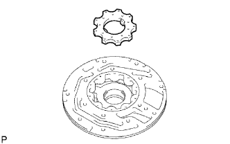 |
| 9. REMOVE FRONT OIL PUMP DRIVEN GEAR |
| 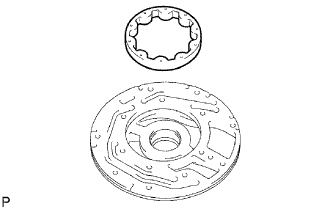 |
| 10. REMOVE FRONT OIL PUMP OIL SEAL |
| 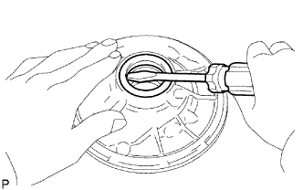 |
Using a screwdriver, pry out the oil seal.